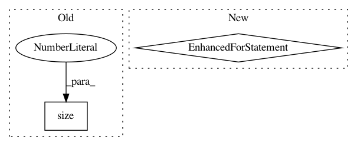

e6bbf54046cf4567e88cb130300b6b78ec88cb27,test_imagenet.py,,validate,#,95
Before Change
// measure accuracy and record loss
prec1, prec5 = accuracy(output.data, target, topk=(1, 5))
losses.update(loss.data[0], input.size(0))
top1.update(prec1[0], input.size(0))
top5.update(prec5[0], input.size(0))
After Change
count = target.new_tensor([target.shape[0]],dtype=torch.long)
if dist.is_initialized():
dist.all_reduce(count, dist.reduce_op.SUM)
for meter,val in (losses,loss), (top1,prec1), (top5,prec5):
if dist.is_initialized():
dist.all_reduce(val, dist.reduce_op.SUM)
val /= count.item()
meter.update(val.item(), count.item())
// measure elapsed time
batch_time.update(time.time() - end)
end = time.time()
if i % args.print_freq == 0:
In pattern: SUPERPATTERN
Frequency: 3
Non-data size: 2
Instances
Project Name: mapillary/inplace_abn
Commit Name: e6bbf54046cf4567e88cb130300b6b78ec88cb27
Time: 2018-11-28
Author: samuel@mapillary.com
File Name: test_imagenet.py
Class Name:
Method Name: validate
Project Name: Scitator/catalyst
Commit Name: f4beaac559e00a3676d942dc7e8fea69efc01cfe
Time: 2020-11-30
Author: raveforlive@gmail.com
File Name: catalyst/metrics/mrr.py
Class Name:
Method Name: mrr
Project Name: mariogeiger/se3cnn
Commit Name: 9c309a959052ec40cf92cf4baa3894f5118cf8c4
Time: 2019-07-08
Author: geiger.mario@gmail.com
File Name: se3cnn/blocks/point_gated_block.py
Class Name: PointGatedBlock
Method Name: forward